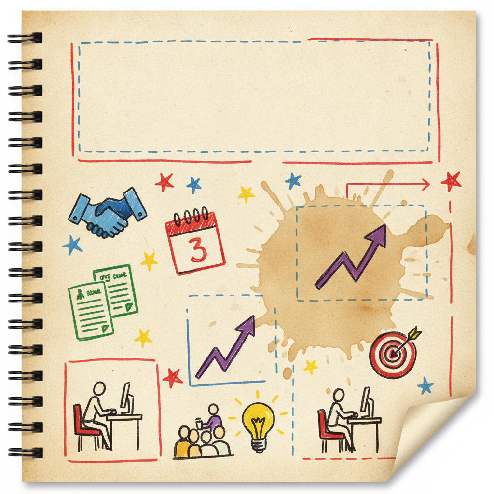
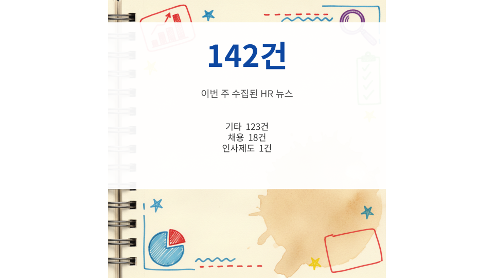
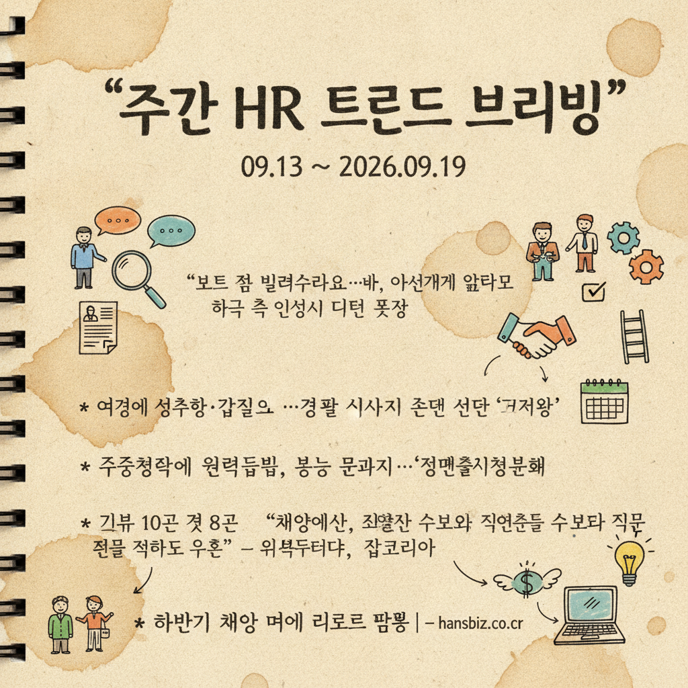
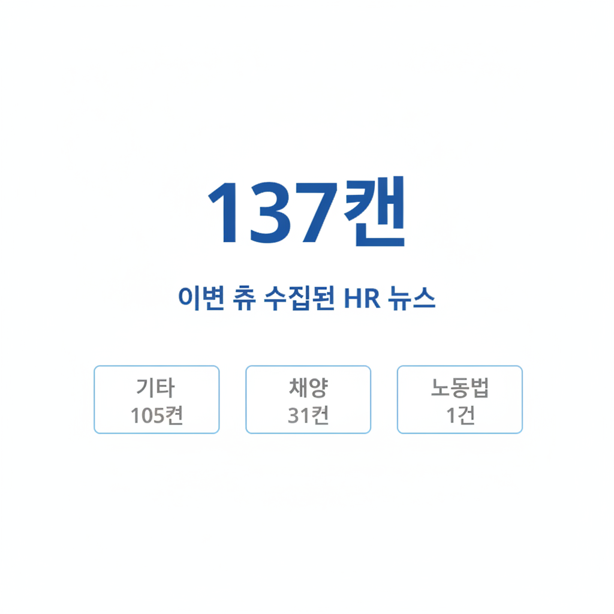

10.04 ~ 2026.10.10

⬇️ 표지 슬라이드 다운로드

⬇️ 통계 슬라이드 다운로드
총평
이번 주 HR 및 노동 시장에서는 정년 연장과 재고용 확대가 청년 신규 채용에 미칠 영향에 대한 우려가 이어지는 가운데, 다양한 산업 분야의 인력난이 지속되었습니다. 한편 금융권을 중심으로 AI 활용과 직무 전문성에 집중하는 채용 방식의 대전환이 가속화되었습니다. 아울러 금융 노사 교섭 타결 등 임금과 근무 체계 개편을 둘러싼 노사 협력 및 대응의 필요성이 부각되었습니다.
시사점1
AI 기술 도입과 '핀셋 채용' 트렌드에 따라 기존의 대규모 공채에서 직무 전문성 중심의 채용 및 교육 체계로 인사 관리 전략을 전환할 필요가 있습니다.
시사점2
정년 연장 및 재고용 확대가 청년층 채용 축소 우려로 이어지는 만큼, 청년 일자리 창출과 고연령 인력 활용의 균형을 이루는 유연한 고용 구조를 마련해야 합니다.
시사점3
지속되는 인력난과 근로 시간 및 임금 합의 사례에 대응하여, 실질적인 근로 조건 개선과 인력 매칭 강화를 통해 핵심 인력을 확보하고 노사 갈등을 예방해야 합니다.
10.04 ~ 2026.10.10
총평
이번 주 노동 및 채용 시장에서는 정년 연장과 재고용을 둘러싼 청년 일자리 영향 논의와 함께 산업 전반의 인력난 해소 방안이 주요 이슈로 떠올랐습니다. 또한 AI 기술 도입에 맞춰 대규모 공채 대신 직무 전문성 중심의 핀셋 채용으로 채용 방식이 전환되는 경향이 나타났습니다. 이와 함께 금융권 노사 교섭 타결을 포함하여 임금, 근무 체계 개편, 정년 문제 등에 관한 노사 간 논의가 다양하게 이어졌습니다.
시사점1
정년 연장과 재고용 확대 흐름 속에서 청년 신규 채용 감소에 대한 우려가 커지고 있으므로, 인사 담당자는 신규 채용 축소를 최소화하면서 숙련 인력을 활용할 수 있는 유연한 재고용 체계와 노사 상생 전략을 마련해야 합니다.
시사점2
은행권을 비롯해 AI 중심의 전문 인력 핀셋 채용으로 변화하고 있으므로, 기업의 HR 부서는 직무 전문성을 정밀하게 평가할 수 있는 채용 프로세스 개편과 HR 테크의 효과적인 도입을 검토해야 합니다.
시사점3
지역 및 특정 분야의 인력난을 해소하기 위해 외국인 인력 활용, 일자리 매칭, HR 테크 도입 등 다각도의 채용 채널을 구축하고, 개편되는 근무 체계와 임금 협상 기조에 맞춰 안정적인 노사 소통을 유지해야 합니다.
09.13 ~ 2026.09.19

⬇️ 표지 슬라이드 다운로드

⬇️ 통계 슬라이드 다운로드
총평
이번 주 HR 시장은 CJ·신세계 등 주요 대기업을 중심으로 하반기 신입 공채가 활발히 시작된 가운데, 단순 스펙보다 'AI 역량'과 '직무 적합성'을 최우선으로 검증하는 채용 트렌드가 뚜렷해졌습니다. 한편 반도체·의료·지역 현장 등 산업 전반의 고질적인 인력난을 극복하기 위해 로봇·AI 도입 및 외국인 근로자 활용 등 대체 인력 수급 전략이 구체화되었습니다. 이와 함께 정년 연장 논의와 통상임금 및 생활임금 이슈가 지속되며 인사 노무 관리의 선제적 대응이 강조되고 있습니다.
시사점1
직무 적합도 중심 채용과 AI 역량 평가 도입의 필요성 - 주요 대기업들이 채용 프로세스에 AI 역량 진단을 적극 도입하고 지원자의 직무 적합도를 최우선시함에 따라, 인사담당자는 단순 스펙 평가에서 벗어나 업무 현장에 즉시 적용 가능한 AI 활용 능력과 직무 전문성을 검증할 수 있는 평가 체계를 구축해야 합니다.
시사점2
만성적 인력난 대응을 위한 기술 도입 및 인력 다변화 전략 - 의료, 반도체, 유통, 농촌 등 여러 영역에서 인력 부족 현상이 심화되고 있으므로, AI 및 로봇을 활용한 업무 자동화와 더불어 외국인 인력, 정년 인력 등 다변화된 인적 자원을 적극 수용하는 인력 운용 모델을 준비해야 합니다.
시사점3
정년 연장 이슈와 임금 체계 재정비에 대한 선제적 대비 - 지자체 공무직의 정년 연장 사례와 함께 노동계의 정년 연장 및 통상임금·생활임금 관련 요구가 지속되고 있는 만큼, 인사담당자는 향후 고령화에 대비한 조직 내 중장년 인력 활용 방안과 지속 가능한 임금 산정 기준을 미리 정비할 필요가 있습니다.